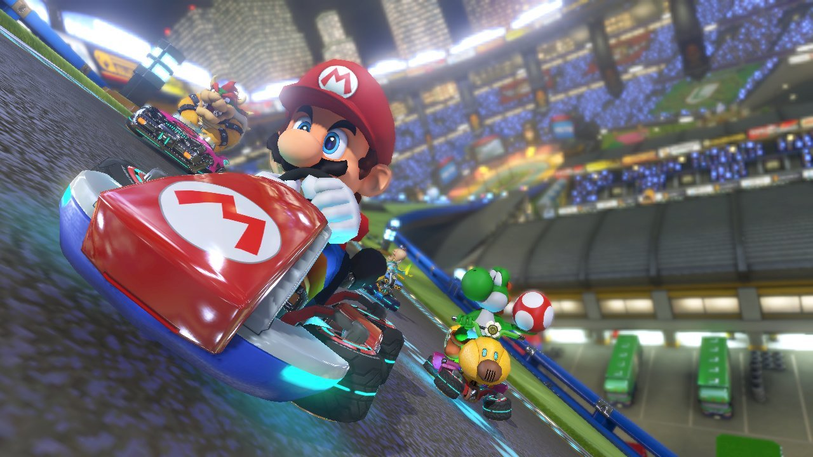

Have you ever played the classic Mario Kart game and wondered to yourself during a race, “Should I risk the shortcut?” Well, if you have, I’ve got some answers for you! And you don’t have to only take my word for it- we will be looking at results from the top players in the world, earning records in Mario Kart 64 since 1997.
From personal experience, if you are not an expert Mario Kart player, taking the shortcut can lead to some disadvantages in the heat of a race. If you fall off the track while turning for the shortcut, precious time can be lost while you are dragged back on the the original track. If you hit an object trying to turn on the shortcut, you might have to back up and turn back around, which can also put you behind in a race. For these reasons, it would be beneficial to look at which tracks I should really master the shortcut, and which tracks it would be better to just stay in my lane.
A Look at the Data
The data included in this analysis comes from Mario Kart World Records and contains records from players using the Nintendo 64 video game console. The variables that can be found in this data set are listed below.
track: Track name
type: Single or three lap record
shortcut: Shortcut or non-shortcut record
player: Player’s name
system_played: Used system (NTSC or PAL)
data: World record date
time_period: Time (hours/min/s)
time: Time in seconds
record_duration: Record duration in days
We are primarily interested in investigating the length of time it takes to complete tracks with and without their shortcuts, therefore we will be focusing on the track, shortcut, and time variables included above. This data set originally contains 2,334 observations from various players. However, we will not be using all of these cases. Out of the 16 tracks included in this original data, four of the tracks do not include shortcuts (For those who know Mario Kart tracks, these include Bowser’s Castle, Banshee Boardwalk, Koopa Troopa Beach, and Moo Moo Farm). Since we are interested in which tracks will save us the most time by taking that shortcut, we will exclude these tracks from our analysis. We will also only be considering the recorded times of three laps races (the typical amount of laps in a tournament race) instead of a single lap to simplify our discussion.
Visual Analysis
To help understand the general time it takes to race around each track, we will take a look at how long it takes players to complete three laps without using any shortcuts.
The graph above demonstrates the average time in seconds it takes to complete three laps around each track without using the shortcut. From this we can tell that Rainbow Road appears to be the longest race, taking around 358 seconds, or 6 minutes and 15 seconds, to complete, followed by Wario Stadium at around 256 seconds, or 4 minutes and 16 seconds. The track with the fastest time is Mario Raceway, with a shorter time of 89 seconds on average (1 minute and 29 seconds). Yoshi Valley follows this track with an average time of 105 seconds, or 1 minute and 45 seconds. It is important to note that standard error for each time above was very small, and therefore was excluded from the plot.
Now we can begin to examine how much time we can actually save by taking a shortcut. The figure below uses values taken from the difference in seconds between racing without the shortcut and racing with the shortcut. These time differences have been plotted for each track.

It appears that the amount of time saved by taking a shortcut is the most while racing in Wario Stadium, saving on average around 243 seconds of time during the entire race. On Rainbow Road, around 142 seconds have been saved from taking the shortcut. From this, it sounds like taking the shortcut on these tracks would be worth all the risk. On the other hand, taking the shortcut on the Kalimari Desert track appears to only save around 2 seconds of time, so it may be wiser to ignore this shortcut and stay on the main track.
Conclusion
Overall, its obvious which shortcuts have saved the best players the most time over the years, but it is important to note some flaws in this analytical approach. The charts in the previous section take the average time over all records achieved from 1997 to 2021, therefore average time shown may not be clearly representative of the exact time it takes for one individual to complete a race. Regardless of this fact, we can still learn which track shortcuts have saved the pros the most time over the years.
In the future, it would be interesting to dive into a bit of history surrounding Mario Kart 64, and look into when these shortcuts were each discovered. With the data used in this investigation, it would also be interesting to look at specific players who remained undefeated for the longest amount of time. Another research avenue I would be interested in exploring is within other versions of the game, such as the popular Mario Kart 8 Deluxe played on the Nintendo Switch.
In conclusion, whether you are practicing to set the new world record, or just practicing to beat your friends, I would advise to spend some time practicing the shortcuts in Wario Stadium and Rainbow Road, and less time in the Kalimari Desert.
Good Luck!
Connection to Class Ideas
For the visualizations included in this blog, I used a limited color scale that is clear and would not confuse readers. I also kept the graphs neat and limited clutter by keeping the background and theme minimal. I enlarged the font of the track and axis titles to make the labels easier to read, and I also arranged the tracks in descending order so that viewers could make quick and accurate judgments about the data being presented.